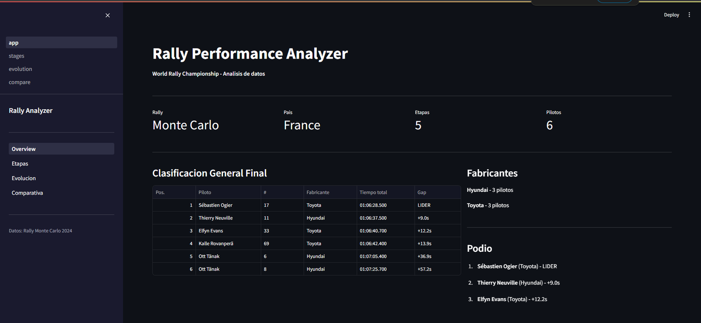

Experiencia profesional
Conductor · Plataforma analítica
Marzo – Junio 2026
Plataforma empresarial cloud-native y multi-tenant. Mi trabajo se centró en APIs y BFF,
autenticación y autorización con JWT/RS256, control de acceso basado en roles y permisos,
Kafka, Docker, PostgreSQL, MongoDB, testing y validación de migraciones.
Python
FastAPI
Kafka
Docker
PostgreSQL
MongoDB
JWT / RS256
RBAC · roles y permisos
Ver experiencia
Proyecto destacado

Backend Red Social · Java/Spring Boot
Marzo 2026
Proyecto final de DAM calificado con 10/10. API REST para una red social con Spring Boot,
Spring Security, autenticación JWT, usuarios, seguidores, publicaciones, imágenes,
persistencia y control de permisos.
Java
Spring Boot
Spring Security
JWT
MySQL
GitHub
Proyecto destacado

Rally Performance Analyzer
Junio 2026
Aplicación para analizar datos reales del World Rally Championship. Integra scraping
responsable, procesamiento de información, una API REST con FastAPI y visualizaciones
orientadas al rendimiento deportivo.
Python
FastAPI
Pandas
Scraping
Datos
GitHub
Proyecto personal

Portfolio profesional
Noviembre 2025
Portfolio estático desarrollado desde cero para presentar proyectos y experiencia.
Incluye diseño responsive, modo oscuro, mejoras de accesibilidad, SEO y despliegue en Vercel.
HTML
CSS
JavaScript
Responsive
Vercel
GitHub
En desarrollo
Frontend
FastAPI
Ollama
Modelo local
Chatbot local con IA
Julio 2026
Proyecto en desarrollo para construir un chat local ligero mediante una API con FastAPI
y Pydantic. La arquitectura está planteada para ejecutar modelos con Ollama, gestionar
contexto e historial y permitir futuros proveedores de IA.
Python
FastAPI
Pydantic
Ollama
LLM local
Diseño y desarrollo en curso
Repositorio completo
Java · Python · Frontend · Bases de datos
Más proyectos y evolución técnica
GitHub
Consulta otros ejercicios y proyectos de aprendizaje: aplicaciones Java, lógica backend,
interfaces web, bases de datos y experimentos técnicos que muestran mi evolución.
Java
Python
Web
SQL
Aprendizaje
Ver todos